🎬 最终女孩
Final Girl · 设计：A.J. Porfirio & Evan Derrick · Van Ryder Games 出版 · 1 人 · 官方英文规则书全文翻译（19 页 · AI 辅助机翻）
本页为《最终女孩》（Final Girl, 2021）官方英文规则书的全文中文翻译，底本为 Van Ryder Games 官方（Shopify CDN）（FinalGirl_Rules_ff324b01-6f74-43e0-90e2-1685594703d5.pdf，19 页），整本译出、未删节，原版规则书页面随文嵌入——点击任意图片即可放大查看。规则内容归 Van Ryder Games 及版权方所有，译文仅供个人学习查阅。
整理说明：本页由 AI 辅助机翻整本规则书并按本站术语口径对齐（牌库/手牌/回合/轮/板块/指示物等），数字与费用逐段保留原文口径；如对规则细节有疑问，请以随文原书页面或上方官方原文 PDF 为准。每页译文上方为对应的原版规则书页面。
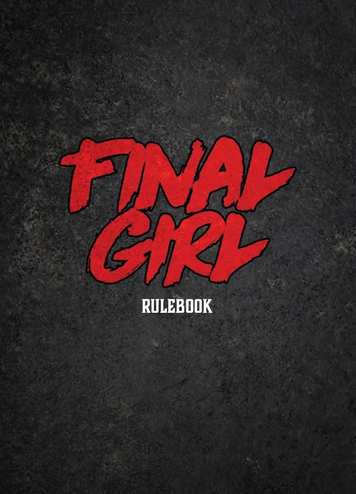
规则书
游戏概述
欢迎来到《骰子都市》(Dice City)！在这款游戏中，你将扮演一座城市的领导者，通过掷骰子来建造你的城市、收集资源、发展科技，并最终获得最多的胜利点(VP)。
游戏目标
游戏结束时，拥有最多胜利点(VP)的玩家获胜。
游戏组件
- 6个玩家指示物(6种颜色)
- 1个起始玩家指示物
- 1个版图
- 4个骰子(每种颜色1个)
- 72个建筑卡牌
- 36个米宝(6种颜色，每种6个)
- 1个资源标记板
- 1个起始玩家标记
- 1个第一回合标记
- 1个游戏结束标记
- 1个骰子容器
- 1个布袋(用于单人模式)
设置
- 将版图放在桌子中央。
- 将建筑卡牌洗混，然后根据卡牌上的颜色分成6堆，放在版图上对应的区域。
- 每位玩家选择一种颜色，并拿取相应颜色的玩家指示物和6个米宝。
- 将起始玩家指示物随机交给一位玩家。
- 将第一回合标记放在版图上的"第一回合"位置。
- 将游戏结束标记放在版图上的"游戏结束"位置。
- 将4个骰子放入骰子容器中。
- 在单人模式中，将布袋放在版图旁边。
游戏回合
游戏按回合进行，每位玩家在自己的回合中执行以下步骤：
- 掷骰子
- 选择行动
- 结束回合
掷骰子
在你的回合开始时，从骰子容器中取出所有骰子，然后掷它们。你可以选择重新掷任何数量的骰子，但必须至少保留一个骰子。你可以重新掷骰子最多两次。
选择行动
掷完骰子后，你必须选择一个行动。每个行动都需要特定的骰子组合：
- 建造：使用相同数字的骰子来建造建筑。
- 收集资源：使用相同颜色的骰子来收集资源。
- 发展科技：使用相同颜色和数字的骰子来发展科技。
- 使用特殊能力：使用特定的骰子组合来使用建筑的特殊能力。
建造
要建造建筑，你需要使用相同数字的骰子。例如，使用三个"3"骰子可以建造一个需要3个骰子的建筑。
- 选择你想要建造的建筑。
- 支付建筑所需的费用(如果有)。
- 将相应数量的米宝放在建筑上。
- 将建筑卡牌放入你的弃牌堆。
收集资源
要收集资源，你需要使用相同颜色的骰子。例如，使用两个蓝色骰子可以收集2个蓝色资源。
- 选择你想要收集的资源类型。
- 将相应数量的资源标记放在你的资源区域。
发展科技
要发展科技，你需要使用相同颜色和数字的骰子。例如，使用一个红色"4"骰子可以发展一个需要红色"4"的科技。
- 选择你想要发展的科技。
- 支付科技所需的费用(如果有)。
- 将科技卡牌放入你的弃牌堆。
使用特殊能力
许多建筑具有特殊能力，你可以通过使用特定的骰子组合来激活这些能力。
- 选择你想要使用的特殊能力。
- 支付能力所需的费用(如果有)。
- 执行能力的效果。
结束回合
当你完成所有行动后，结束你的回合：
- 将你使用的骰子放回骰子容器。
- 将起始玩家指示物交给下一位玩家。
- 检查游戏是否结束(见"游戏结束"部分)。
游戏结束
当游戏结束标记被移动到版图上的"游戏结束"位置时，游戏立即结束。这通常发生在第12个回合结束时。
计分
游戏结束时，玩家计算自己的胜利点(VP)：
- 每个建筑：1 VP
- 每个科技：1 VP
- 特殊能力获得的VP
- 资源转换的VP
- 其他来源的VP
单人模式
单人模式中，你将与AI对手游戏。AI会自动执行其行动，遵循简单的规则。游戏的目标仍然是获得最多的VP。
扩展
《骰子都市》有多个扩展，可以增加新的建筑、科技和游戏机制。扩展可以单独使用或组合使用，以增加游戏的变化性和重玩价值。
常见问题
Q: 我可以重新掷所有骰子吗？
A: 不行，你必须至少保留一个骰子。
Q: 我可以同时执行多个行动吗？
A: 是的，只要你拥有足够的骰子组合。
Q: 游戏什么时候结束？
A: 当游戏结束标记被移动到"游戏结束"位置时，通常在第12个回合结束时。
设计师注释
《骰子都市》的设计灵感来自于经典的骰子游戏和城市建设游戏。我们希望这款游戏能够提供简单易学但策略丰富的游戏体验。
感谢
感谢您选择《骰子都市》！我们希望您能享受这款游戏，并期待听到您的反馈。
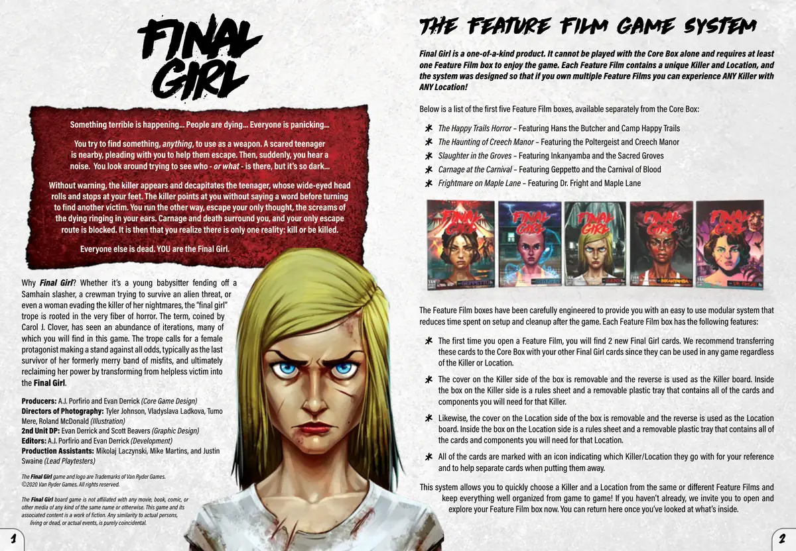
为什么是《最终女孩》？无论是年轻的保姆抵御萨温节（Samhain）的杀人狂，船员试图在外星威胁中生存，甚至是女性逃避她噩梦中的杀手，"最终女孩"（Final Girl）原型深深植根于恐怖的核心。这个术语由卡罗尔·J·克洛弗（Carol J. Clover）创造，已经出现了大量变体，其中许多你将在这款游戏中找到。该原型要求一位女性主角在逆境中奋起反抗，通常作为她曾经欢乐的一群怪胎中最后的幸存者，并最终通过从无助的受害者转变为最终女孩来重新获得她的力量。
制片人：A.J. Porfirio 和 Evan Derrick（核心游戏设计）
摄影指导：Tyler Johnson、Vladyslava Ladkova、Tumo Mere、Roland McDonald（插画）
第二摄影组：Evan Derrick 和 Scott Beavers（平面设计）
编辑：A.J. Porfirio 和 Evan Derrick（开发）
制作助理：Mikolaj Laczynski、Mike Martins 和 Justin Swaine（首席测试玩家）
《最终女孩》游戏和logo是 Van Ryder Games 的商标。
©2020 Van Ryder Games. 保留所有权利。
《最终女孩》桌面游戏与任何同名或不同名的电影、书籍、漫画或其他任何媒体均无关联。本游戏及其相关内容是虚构作品。与实际人物（在世或已故）或实际事件的任何相似之处纯属巧合。
电影游戏系统
《最终女孩》是一款独一无二的产品。它不能仅用核心盒（Core Box）单独游玩，并且至少需要一个电影盒（Feature Film）才能享受游戏乐趣。每个电影盒包含一个独特的杀手（Killer）和地点（Location），该系统设计为：如果你拥有多个电影盒，你可以将任何杀手与任何地点组合体验！
以下是前五个电影盒的列表，可单独从核心盒购买：
- 《快乐小径恐怖事件》（The Happy Trails Horror）—— featuring Hans the Butcher（汉斯屠夫）和 Camp Happy Trails（快乐小径营地）
- 《克里奇庄园的 haunting》（The Haunting of Creech Manor）—— featuring the Poltergeist（吵鬼）和 Creech Manor（克里奇庄园）
- 《树林中的屠杀》（Slaughter in the Groves）—— featuring Inkanyamba（因坎扬巴）和 the Sacred Groves（神圣树林）
- 《游乐园的血腥狂欢》（Carnage at the Carnival）—— featuring Geppetto（杰佩托）和 the Carnival of Blood（血腥嘉年华）
- 《枫树街的噩梦》（Frightmare on Maple Lane）—— featuring Dr. Fright（恐惧博士）和 Maple Lane（枫树街）
电影盒经过精心设计，为您提供易于使用的模块化系统，减少游戏后设置和清理的时间。每个电影盒具有以下特点：
- 第一次打开一个电影盒时，你会找到2张新的最终女孩卡。我们建议将这些卡片转移到核心盒中与其他最终女孩卡片一起存放，因为它们可以在任何游戏中使用，无论杀手或地点如何。
- 盒子杀手一侧的封面可拆卸，背面用作杀手版（Killer board）。内部
盒子内容
杀手一侧的盒子里是一张规则纸和一个可拆卸的塑料托盘，托盘内包含该杀手所需的所有卡牌和组件。
- 同样，盒子位置一侧的封面是可以拆卸的，背面用作位置版图。盒子位置一侧内部有一张规则纸和一个可拆卸的塑料托盘，托盘内包含该位置所需的所有卡牌和组件。
- 所有卡牌上都标有图标，指示它们属于哪个杀手/位置，供您参考，并在收纳时帮助您分开卡牌。
这个系统允许您快速选择来自同一部或不同恐怖电影的杀手和位置，并在游戏之间保持所有物品井井有条！如果您还没有这样做，我们邀请您现在打开并探索您的恐怖电影盒子。查看完内部物品后，您可以回到这里。
可怕的事情正在发生...人们正在死去...每个人都惊慌失措...
你试图寻找任何可以当作武器的东西。一个受惊的青少年在附近，恳求你帮助他们逃脱。突然，你听到一个声音。你环顾四周，试图看到是谁或什么东西在那里，但天太黑了...
毫无预警，杀手出现了，砍下了青少年的头，那双睁大的眼睛的头滚到你的脚边。杀手一言不发地指着你，然后转身寻找下一个受害者。你朝相反方向跑去，逃脱是你唯一的念头，垂死者的尖叫声在你耳边回响。屠杀和死亡包围着你，而你唯一的逃生路线被堵住了。直到那时你才意识到只有一个现实：杀人或者被杀。
其他人都死了。你是最后的女孩。
FINal
GIrl
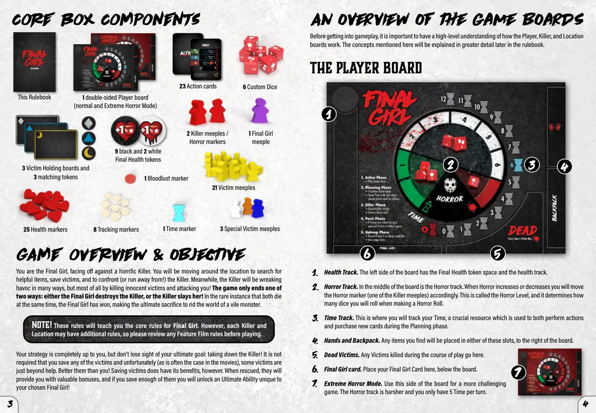
核心盒组件
游戏概述与目标
你是最终女孩，面对着一个可怕的杀手。你将在场地中移动，寻找有用的物品，拯救受害者，以及对抗（或逃离！）杀手。与此同时，杀手将以多种方式制造混乱，但最主要的是杀害无辜的受害者并攻击你！游戏只会在以下两种方式之一结束：要么最终女孩消灭杀手，要么杀手杀死她！在极其罕见的情况下，如果两人同时死亡，最终女孩获胜，她做出了终极牺牲，将世界上的一个邪恶怪物清除。
你的策略完全由你决定，但不要忘记你的终极目标：击败杀手！你不需要拯救任何受害者，而且不幸的是（就像电影中常见的那样），有些受害者就是无法获救。他们比你死掉更好！然而，拯救受害者确实有其好处。当被救出后，他们会为你提供宝贵的奖励，如果你拯救了足够多的受害者，你将解锁一个与你选择的最终女孩独特的终极能力！
游戏版图概述
在开始游戏之前，了解玩家版图、杀手版图和场地版图如何运作非常重要。这里提到的概念将在规则书后面详细解释。
玩家版图
- 生命值轨道。版图的左侧有最终生命值指示物位置和生命值轨道。
- 恐怖值轨道。版图中间是恐怖值轨道。当恐怖值增加或减少时，你将相应地移动恐怖值标记（其中一个杀手米宝）。这被称为恐怖等级，它决定了你在进行恐怖检定时将投掷多少个骰子。
- 时间轨道。这是你追踪时间的地方，时间是一个关键资源，用于在计划阶段执行行动和购买新卡牌。
- 手牌和背包。你找到的任何物品将被放置在版图右侧的这些槽位中。
- 死亡受害者。游戏过程中被杀的任何受害者都放在这里。
- 最终女孩卡牌。将你的最终女孩卡牌放在版图下方的这里。
- 极限恐怖模式。使用版图的这一面进行更具挑战性的游戏。恐怖值轨道更严苛，每回合你只有5点时间。
注意！这些规则将教你最终女孩的核心规则。然而，每个杀手和场地可能有额外的规则，因此在游戏前请查看任何"特色电影"规则。
3个受害者持有板和
3个对应的指示物
9个黑色和2个白色
最终生命值指示物
21个受害者米宝
2个杀手米宝/
恐怖值标记
1个最终女孩
米宝
3个特殊受害者米宝
8个追踪标记
1个时间标记
1个嗜血标记
25个生命值标记
行动
行动
或者
或者
行走
行走
"一只脚放在另一只脚前面。慢慢来。确实有个嗜血的杀手在追我，但这不是恐慌的理由...对吧？"
移动最多
2个格
移动最多
1个格
移动最多
1个格
23张行动卡牌
1张双面玩家版图
（普通模式和极限恐怖模式）
本规则书
6个定制骰子
规则书
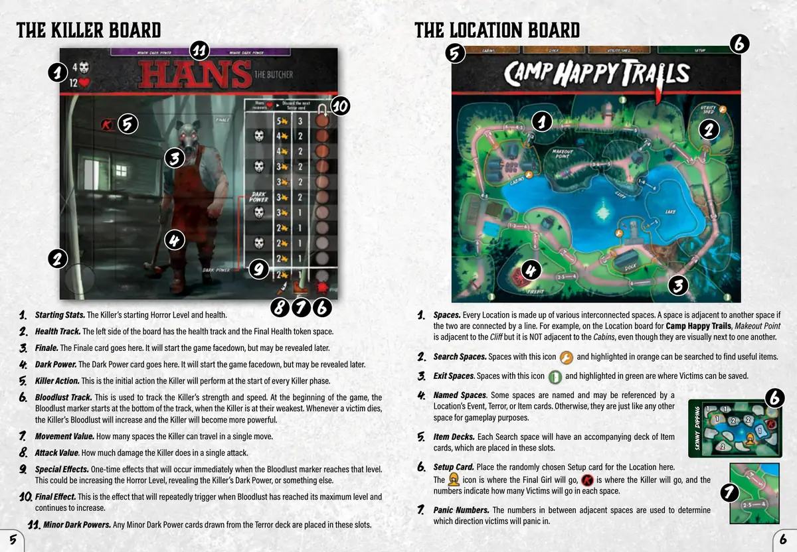
杀手版图
- 起始状态。杀手的初始恐惧等级和生命值。
- 生命值轨道。版图左侧是生命值轨道和最终生命值指示物位置。
- 终局。终局卡牌放在这里。游戏开始时面朝下放置，但之后可能会被揭示。
- 黑暗力量。黑暗力量卡牌放在这里。游戏开始时面朝下放置，但之后可能会被揭示。
- 杀手行动。这是杀手在每个杀手阶段开始时将执行的初始行动。
- 血欲轨道。用于追踪杀手的强度和速度。游戏开始时，血欲指示物位于轨道底部，此时杀手处于最弱状态。每当受害者死亡，杀手的血欲会增加，杀手会变得更加强大。
- 移动值。杀手在一次移动中可以移动多少格。
- 攻击值。杀手在一次攻击中造成的伤害量。
- 特殊效果。当血欲指示物达到该等级时立即发生的一次性效果。这可能是增加恐惧等级，揭示杀手的黑暗力量，或其他效果。
- 最终效果。当血欲达到最高级别并继续增加时，会反复触发的效果。
- 次要黑暗力量。从恐惧牌库中抽到的任何次要黑暗力量卡牌都放置在这些槽位中。
地点版图
- 格。每个地点由各种相互连接的格组成。如果两个格由线条连接，则它们相邻。例如，在快乐露营地地点版图上，亲热点与悬崖相邻，但它与木屋不相邻，尽管它们在视觉上是相邻的。
- 搜索格。带有此图标
并标为橙色高亮的格可以搜索以找到有用的物品。
- 出口格。带有此图标
并标为绿色高亮的格是受害者可以被救出的位置。
- 命名格。有些格有名称，可能会被地点的事件、恐惧或物品卡牌引用。否则，它们在游戏目的上与其他格相同。
- 物品牌库。每个搜索格都有一个配套的物品卡牌牌库，放置在这些槽位中。
- 设置卡。将随机选择的地点设置卡放在这里。
该图标
是最终女孩的位置，
是杀手的位置，数字表示每个格中将放置多少名受害者。
- 恐慌数字。相邻格之间的数字用于确定受害者恐慌的方向。
8 7
裸泳
裸泳
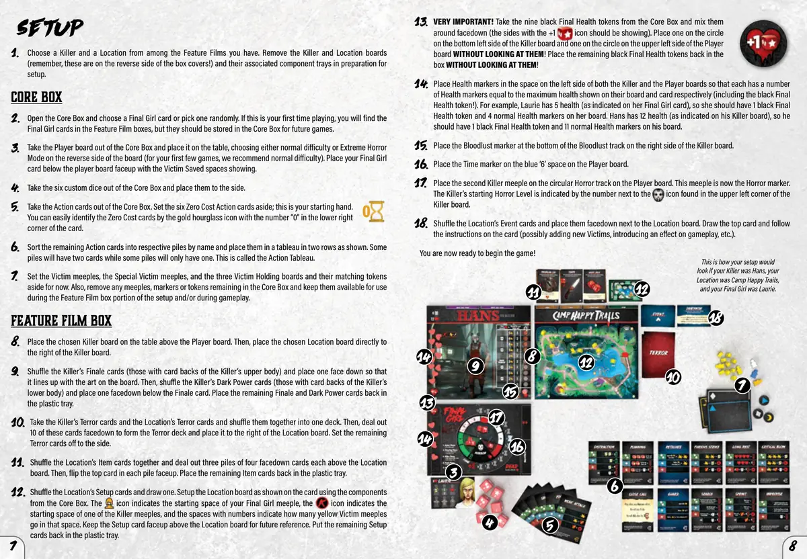
- 非常重要！从核心盒中取出九个黑色最终生命值指示物，将它们面朝下混合（带有+1图标的面应朝上）。不要看它们，将一个放在杀手版图左下角的圆圈上，一个放在玩家版图左上角的圆圈上！不要看它们，将剩余的黑色最终生命值指示物放回盒中！
- 在杀手版图和玩家版图左侧的格中放置生命值标记，使每个的生命值标记数量等于其版图和卡牌上显示的最大生命值（包括黑色最终生命值指示物！）。例如，劳里有5点生命值（如其最终女孩卡所示），所以她应该在版图上有1个黑色最终生命值指示物和4个普通生命值标记。汉斯有12点生命值（如其杀手版图所示），所以他应该在版图上有1个黑色最终生命值指示物和11个普通生命值标记。
- 将嗜血标记放在杀手版图右侧嗜血轨道的底部。
- 将时间标记放在玩家版图上的蓝色"6"格。
- 将第二个杀手米宝放在玩家版图上的圆形恐怖轨道上。这个米宝现在是恐怖标记。杀手的起始恐怖等级由杀手版图左上角图标旁边的数字表示。
- 洗混地点的事件卡，并将其面朝下放在地点版图旁边。抽取顶部的卡牌并遵循卡牌上的说明（可能添加新的受害者，引入游戏效果等）。
你现在可以开始游戏了！
设置
- 从你拥有的电影中选择一个杀手和一个地点。取出杀手和地点版图（记住，这些在盒盖的反面！）及其相关的组件托盘，为设置做准备。
核心盒
- 打开核心盒，选择一张最终女孩卡或随机抽取一张。如果是第一次游戏，你会在电影盒中找到最终女孩卡，但它们应存储在核心盒中以备未来游戏使用。
- 从核心盒中取出玩家版图，将其放在桌上，选择版图反面的普通难度或极端恐怖模式（对于前几局游戏，我们推荐普通难度）。将你的最终女孩卡面朝上放在玩家版图下方，显示受害者获救格。
- 从核心盒中取出六个定制骰子，将其放在一旁。
- 从核心盒中取出行动卡。将六张零成本行动卡放在一边；这是你的起始手牌。
你可以通过卡片右下角的沙漏图标中的数字"0"来轻松识别零费用卡牌。
- 将剩余的行动卡按名称分类整理成堆，如图所示将它们排成两行放置。有些堆会有两张卡，而有些堆只有一张。这被称为行动阵列。
- 先将受害者米宝、特殊受害者米宝以及三个受害者托盘及其对应的指示物放在一旁。同时，移除核心盒中剩余的所有米宝、标记或指示物，并在设置特色电影盒部分和/或游戏过程中保持可用以供使用。
特色电影盒
- 将选定的杀手版图放在玩家版图上方的桌子上。然后将选定的地点版图直接放在杀手版图的右侧。
- 洗混杀手的终局卡（那些背面为杀手上半身的卡牌），并正面朝下放置一张，使其与版图上的图案对齐。然后洗混杀手的黑暗力量卡（那些背面为杀手下半身的卡牌），并在终局卡下方正面朝下放置一张。将剩余的终局卡和黑暗力量卡放回塑料托盘。
- 取出杀手的恐怖卡和地点的恐怖卡，将它们洗混成一个牌库。然后从中发10张牌正面朝下，形成恐怖牌库，并将其放置在地点版图的右侧。将剩余的恐怖卡放在一旁。
- 将地点的物品卡洗混，然后在地点版图上方发三堆，每堆四张牌正面朝下。然后将每堆顶部的牌翻至正面朝上。将剩余的物品卡放回塑料托盘。
- 洗混地点的设置卡并抽取一张。使用核心盒中的组件，按照卡片所示设置地点版图。图标表示你的最终女孩米宝的起始位置，图标表示一个杀手米宝的起始位置，带数字的格子表示该位置应放置多少个黄色受害者米宝。将设置卡正面朝上放在地点版图上方以供将来参考。将剩余的设置卡放回塑料托盘。
如果你的杀手是汉斯(Hans)，地点是快乐营(Camp Happy Trails)，最终女孩是劳里(Laurie)，那么你的设置看起来就像这样。
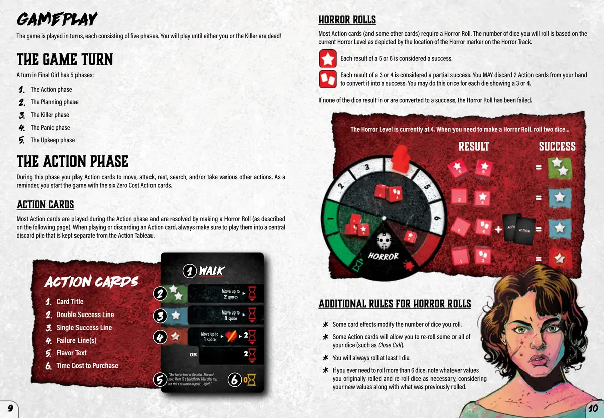
游戏玩法
游戏以回合进行，每个回合包含五个阶段。游戏将持续进行，直到你或杀手死亡为止！
游戏回合
《最终女孩》中的一个回合有5个阶段：
1. 行动阶段
2. 计划阶段
3. 杀手阶段
4. 恐慌阶段
5. 维护阶段
行动阶段
在此阶段，你将使用行动卡来移动、攻击、休息、搜索和/或执行各种其他行动。提醒一下，游戏开始时你拥有六张零成本行动卡。
行动卡
大多数行动卡在行动阶段使用，并通过进行恐怖检定（如下一页所述）来结算。在使用或弃置行动卡时，务必确保将其放入一个与行动牌阵分开的中央弃牌堆。
恐怖检定
大多数行动卡（以及一些其他卡牌）需要进行恐怖检定。你将投掷的骰子数量基于恐怖标记在恐怖轨道上的当前位置所显示的当前恐怖等级。
每个5或6的结果被视为成功。
每个3或4的结果被视为部分成功。你可以弃置2张手牌行动卡将其转化为成功。对于每颗显示3或4的骰子，你可以执行此操作一次。
如果没有骰子结果为成功或被转化为成功，则恐怖检定失败。
恐怖检定的额外规则
- 某些卡牌效果会修改你投掷的骰子数量。
- 某些行动卡允许你重新投掷部分或全部骰子（如《侥幸脱险》）。
- 你至少会投掷1颗骰子。
- 如果你需要投掷超过6颗骰子，记录你最初投掷的数值，并根据需要重新投掷骰子，将新数值与之前投掷的结果一起考虑。
行动卡
1. 卡牌标题
2. 双重成功线
3. 单一成功线
- 失败线
5. 背景文本
6. 购买时间成本
或
或
行走
行走
"一步一步来。慢慢来。确实有个嗜血的杀手在追我，但这不是恐慌的理由...对吧？"
移动最多
2格
移动最多
1格
移动最多
1格
当前恐怖等级为4。当你需要进行恐怖检定时，投掷两颗骰子...
结果
成功
=
=
=
=
+
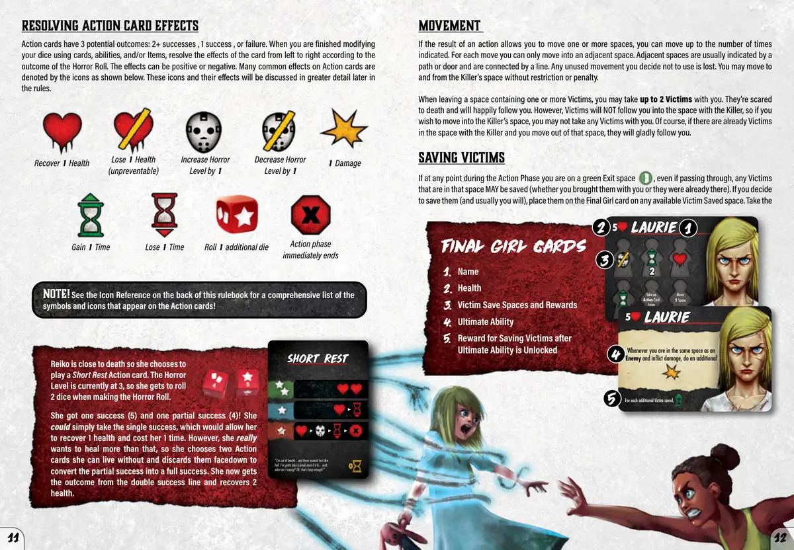
解决行动卡效果
行动卡有3种可能的结果：2个或更多成功、1个成功或失败。当你使用卡牌、能力和/或物品完成修改骰子后，根据恐怖检定的结果，从左到右解决卡牌的效果。效果可能是积极的也可能是消极的。行动卡上许多常见的效果由如下所示的图标表示。这些图标及其效果将在规则后面更详细地讨论。
移动
如果行动结果允许你移动一个或多个格，你可以移动至多指示的次数。每次移动你只能移动到相邻的格。相邻的格通常由路径或门表示，并通过线条连接。你决定不使用的任何移动将丢失。你可以自由地移动到杀手所在的空间，不受限制或惩罚。
当离开包含一个或多个受害者的空间时，你可以带最多2名受害者与你同行。他们吓得要死，会很乐意跟随你。然而，受害者不会跟随你进入杀手所在的空间，因此，如果你希望移动到杀手的空间，你不能带任何受害者。当然，如果杀手所在的空间已经有受害者，而你离开那个空间，他们会很乐意跟随你。
拯救受害者
如果在行动阶段的任何时候你位于绿色出口空间（Exit space），即使只是经过，该空间中的任何受害者都可以被拯救（无论你是带他们来的还是他们已经在那里）。如果你决定拯救他们（而且你通常会这样做），将他们放在最终女孩卡（Final Girl card）上任何可用的受害者拯救空间（Victim Saved space）。
恢复1点生命值
失去1点生命值
（无法阻止）
提高恐怖等级1级
降低恐怖等级1级
1点伤害
获得1点时间
失去1点时间
行动阶段立即结束
额外掷1个骰子
注意！请参阅本规则书背面的图标参考（Icon Reference），获取行动卡上出现的符号和图标的完整列表！
短暂休息
短暂休息
"我喘不过气来...这些伤口疼得要命。我得休息一下，即使这会要了我的命...等等，我在说什么？好了，休息够了！"
丽子（Reiko）濒临死亡，所以她选择打出一张短暂休息行动卡。恐怖等级目前为3，因此在进行恐怖检定时她可以掷2个骰子。
她获得了一个成功（5）和一个部分成功（4）！她可以只接受这个单一成功，这将允许她恢复1点生命值并消耗1点时间。然而，她真的想恢复更多，所以她选择两张可以舍弃的行动牌，面朝下弃掉，将部分成功转化为完全成功。现在她获得
来自双成功线的结果并恢复2点生命值。
劳丽
劳丽
获取一张行动牌
（最多2张）
移动1个格
最终女孩卡牌
1. 姓名
2. 生命值
3. 受害者救援格与奖励
4. 终极能力
5. 解锁终极能力后救援受害者的奖励
劳丽
劳丽
每当你在与敌人相同的格内并造成伤害时，额外造成1点伤害。
每多救援一名受害者，
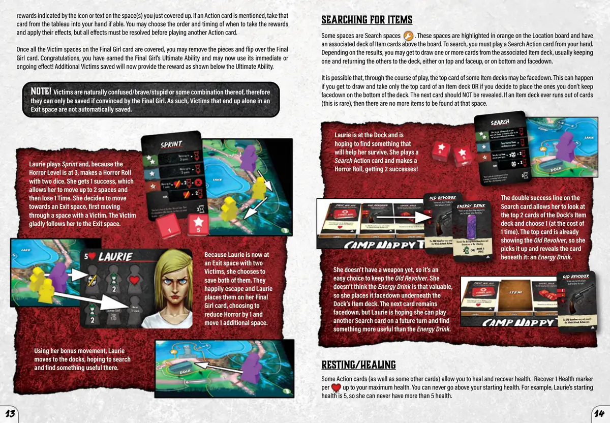
你刚刚覆盖的空间上由图标或文字指示的奖励。如果提到了行动卡牌，请尽可能将该卡牌从版图中拿入你的手牌。你可以选择何时获取奖励并应用其效果的顺序和时间，但所有效果必须在打出另一张行动卡牌前解决。
一旦最终女孩卡上的所有受害者空间都被覆盖，你可以移除棋子并将最终女孩卡翻面。恭喜，你已获得最终女孩的终极能力，现在可以使用其立即或持续效果！额外拯救的受害者现在将提供如终极能力下方所示的奖励。
搜索物品
有些空间是搜索空间。这些空间在位置版图上以橙色高亮显示，并在版图上方有关联的物品卡牌牌库。要进行搜索，你必须从手牌中打出一张搜索行动卡牌。根据结果，你可能可以从关联的物品牌库中摸取一张或多张卡牌，通常保留一张，其余的放回牌库，可以放在顶部正面朝上，或放在底部正面朝下。
在游戏过程中，某些物品牌库的顶牌可能是正面朝下的。这种情况可能发生在你只能摸取并拿走物品牌库的顶牌时，或者当你决定将不保留的卡牌正面朝下放在牌库底部时。不应翻开下一张卡牌。如果物品牌库 ever 用完卡牌（这种情况很少见），那么该空间就没有更多物品可找到了。
休息/治疗
有些行动卡牌（以及一些其他卡牌）允许你治疗并恢复生命值。每恢复1个生命指示物，直到达到你的最大生命值。你永远不能超过你的起始生命值。例如，劳里的起始生命值是5，所以她永远不能拥有超过5点的生命值。
劳里在码头，希望找到能帮助她生存的东西。她打出一张搜索行动卡牌并进行了一次恐怖检定，获得了2次成功！
或者
搜索
搜索
"这里面肯定有什么有用的东西。武器或者其他能帮助我生存的东西。为什么这种事情会发生在我身上？"
拿取你所在空间顶部的2张物品卡牌并选择1张。将另一张放在顶部正面朝上或放在底部正面朝下。
拿取你所在空间顶部的物品卡牌。
拿取你所在空间顶部的物品卡牌。
她还没有武器，所以保留旧左轮手枪是个容易的选择。她认为能量饮料没那么有价值，所以将其正面朝下放在码头的物品牌库下方。下一张卡牌保持正面朝下，但劳里希望她能在未来的回合打出另一张搜索卡牌，找到比能量饮料更有用的东西。
搜索卡牌上的双成功线让她可以查看码头物品牌库顶部的2张卡牌。
从牌库中选择1张（花费1时间）。顶牌已经显示了旧式左轮手枪，所以她拿起它并揭开下面的牌：一瓶能量饮料。
旧式左轮手枪只能修改弱攻击行动卡。
旧式左轮手枪
旧式左轮手枪
"有点生锈了，但仍然能把一颗子弹射进眼睛里。"
能量饮料
能量饮料
"这些东西肯定对你没好处，但总比死强。"
在行动阶段弃掉这张牌并选择以下一项：
或
移动1
空间
旧式左轮手枪只能修改弱攻击行动卡。
旧式左轮手枪
旧式左轮手枪
"有点生锈了，但仍然能把一颗子弹射进眼睛里。"
劳丽使用冲刺，因为恐怖等级为3，她用两个骰子进行一次恐怖检定。她获得1个成功，这使她可以移动最多2个空间，然后失去1时间。她决定朝一个出口空间移动，首先经过一个有受害者的空间。受害者高兴地跟着她到出口空间。
因为劳丽现在在一个有两个受害者的出口空间，她选择拯救他们两个。他们高兴地逃脱了，劳丽将他们放在她的最终女孩卡上，选择减少1点恐怖并额外移动1个空间。
使用她的额外移动，劳丽移动到码头，希望在那里搜索并找到一些有用的东西。
注意！受害者天生困惑/勇敢/愚蠢或这些特质的某种组合，因此只有被最终女孩说服才能被拯救。因此，独自在出口空间中的受害者不会自动被拯救。
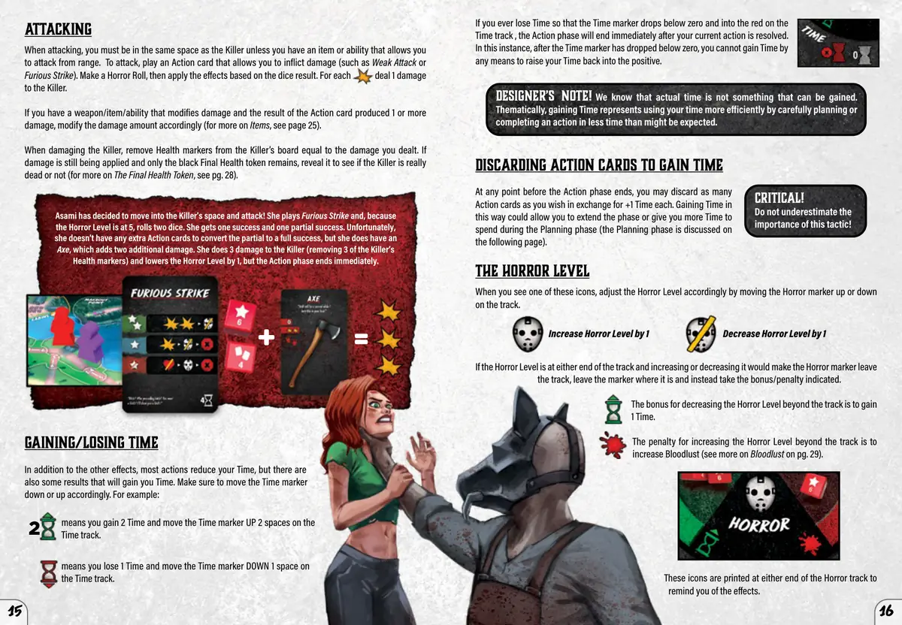
攻击
进行攻击时，你必须与杀手处于同一空间，除非你拥有允许你远程攻击的道具或能力。要攻击，请出一张允许你造成伤害的行动卡（如"弱攻击"或"狂暴打击"）。进行一次恐怖检定，然后根据骰子结果应用效果。每张骰子结果为：
- 造成1点伤害给杀手。
如果你有能修改伤害的武器/道具/能力，且行动卡的结果产生了1点或更多伤害，则相应地修改伤害量（关于道具的更多信息，请见第25页）。
当对杀手造成伤害时，从杀手的版图上移除等于你所造成伤害数量的生命值指示物。如果伤害仍在应用且只剩下黑色最终生命值指示物，则揭示它以查看杀手是否真的死亡（关于最终生命值指示物的更多信息，请见第28页）。
获得/失去时间
除了其他效果外，大多数行动会减少你的时间，但也有一些结果会让你获得时间。确保相应地向下或向上移动时间指示物。例如：
- 表示你获得2点时间，并在时间轨道上向上移动2格。
- 表示你失去1点时间，并在时间轨道上向下移动1格。
如果你失去时间使得时间指示物降到零以下并进入时间轨道的红色区域，行动阶段将在你当前行动解决后立即结束。在这种情况下，在时间指示物降到零以下后，你不能通过任何方式获得时间来将你的时间恢复为正值。
弃掉行动牌以获得时间
在行动阶段结束前的任何时间，你可以弃掉任意数量的行动牌，每弃掉一张获得+1时间。通过这种方式获得时间可以让你延长阶段或在计划阶段获得更多时间（计划阶段将在下一页讨论）。
恐怖等级
当你看到这些图标之一时，相应地调整恐怖等级，在轨道上向上或向下移动恐怖指示物。
如果恐怖等级处于轨道的任一端，且增加或减少它会使恐怖指示物离开轨道，则将指示物留在原位，而是获得/承受所示的奖励/惩罚。
将恐怖等级降低到轨道以下之外的奖励是获得1点时间。
将恐怖等级增加到轨道以上之外的惩罚是增加嗜血（关于嗜血的更多信息，请见第29页）。
这些图标印刷在恐怖轨道的两端，提醒你这些效果。
增加恐怖等级1
减少恐怖等级1
Asami决定移动到杀手的空间并攻击！她出"狂暴打击"，并且因为
恐怖等级为5，掷出两个骰子。她获得一次成功和一次部分成功。不幸的是，她没有额外的行动卡牌可以将部分成功转化为完全成功，但她确实有一把斧头，可以增加两点额外伤害。她对杀手造成3点伤害（移除3个杀手的生命指示物），并将恐怖等级降低1点，但行动阶段立即结束。
+
=
设计师注！我们知道实际时间是无法获得的。从主题上讲，获得时间代表通过仔细规划或以比预期更少的时间完成行动来更有效地利用你的时间。
关键！
不要低估这一战术的重要性！
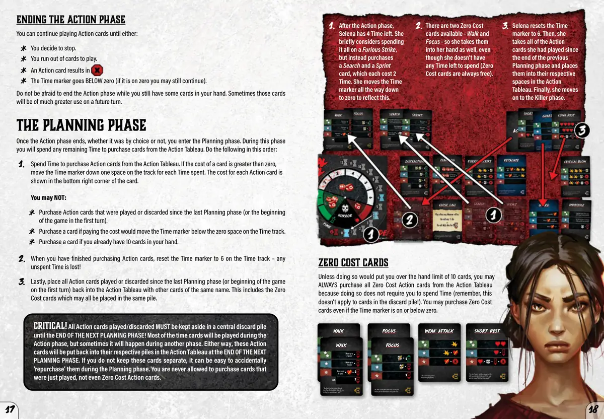
零费用卡牌
除非这样做会使你的手牌数量超过10张的上限，否则你总是可以从行动牌阵中购买所有零费用行动卡牌，因为这样做不需要你花费时间（记住，这不适用于弃牌堆中的卡牌！）。即使时间指示器在零或低于零的位置，你也可以购买零费用卡牌。
结束行动阶段
你可以继续打出行动卡牌，直到以下任一情况发生：
- 你决定停止。
- 你没有卡牌可以打出。
- 一张行动卡牌导致
- 时间指示器降到零以下（如果指示器在零上，你仍然可以继续）。
不要害怕在手中还有卡牌时就结束行动阶段。有时这些卡牌在未来的回合中会更有用。
规划阶段
一旦行动阶段结束，无论是有意还是无意，你将进入规划阶段。在此阶段，你将花费剩余的时间来从行动牌阵中购买卡牌。按以下顺序进行：
- 花费时间从行动牌阵中购买行动卡牌。如果一张卡牌的费用大于零，则每花费1点时间，将时间指示器在时间轨道上向下移动一格。每张行动卡牌的费用显示在卡牌右下角。
你不能：
- 购买自上次规划阶段（或第一回合的游戏开始）以来被打出或弃置的行动卡牌。
- 如果支付费用会使时间指示器在时间轨道上低于零格，则不能购买该卡牌。
- 如果你的手牌已经有10张，则不能购买卡牌。
- 当你完成购买行动卡牌后，将时间指示器重置到时间轨道上的6点——任何未花费的时间都将丢失！
- 最后，将自上次规划阶段（或第一回合的游戏开始）以来被打出或弃置的所有行动卡牌放回行动牌阵中，与其他同名卡牌放在一起。这包括零费用卡牌，它们可以全部放在同一个牌堆中。
重要！所有被打出/弃置的行动卡牌必须被单独放置在一个中央弃牌堆中，直到下一个规划阶段结束！大多数情况下卡牌会在行动阶段打出，但有时也会在其他阶段发生。无论哪种情况，这些行动卡牌都将在下一个规划阶段结束时放回行动牌阵中各自的牌堆。如果你不将这些卡牌分开存放，很容易在规划阶段不小心"重新购买"它们。你永远不允许购买刚刚打出的卡牌，即使是零费用行动卡牌也不行。
1. 行动阶段结束后，
塞琳娜（Selena）还剩4点时间。她 briefly 考虑全部花在狂击（Furious Strike）上，但转而购买了一张搜索（Search）和一张冲刺（Sprint）卡牌，每张都花费2点。
2. 有两张零费用卡牌可用——行走和专注——所以她也把它们拿入手牌，尽管她没有任何时间可以花费（零费用卡牌总是免费的）。
3. 塞莱娜将时间指示物重置为6。然后，她拿自从上一个规划阶段结束以来她打出的所有行动卡牌，并将它们放入行动版图中相应的位置。最后，她进入杀手阶段。
行走
"一步一步来。慢慢来。确实有个嗜血的杀手在追我，但这不是恐慌的理由...对吧？"
最多移动2个格
最多移动1个格
最多移动1个格
专注
"好了，思考！我知道我该做什么。这很吓人，但我必须克服它，专注于我的下一步。"
弱攻击
弱攻击
短暂休息
"我喘不过气来了...而且这些伤口疼得要命。我必须休息一下，即使这会...等等，我在说什么？好了，休息够了！"
行走
"一步一步来。慢慢来。确实有个嗜血的杀手在追我，但这不是恐慌的理由...对吧？"
最多移动2个格
最多移动1个格
最多移动1个格
专注
"好了，思考！我知道我该做什么。这很吓人，但我必须克服它，专注于我的下一步。"
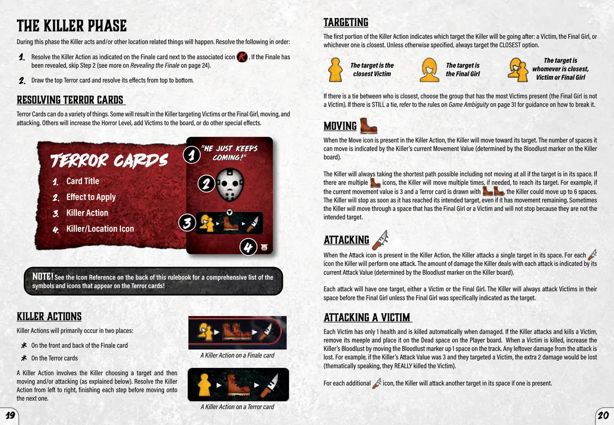
杀手阶段
在此阶段，杀手会行动和/或发生其他与地点相关的事情。按顺序解决以下事项：
- 根据终局卡上相关图标旁所示解决杀手行动。如果终局卡已被揭示，则跳过第2步（关于揭示终局卡的更多信息见第24页）。
- 抽取顶部的恐怖卡牌并从上到下解决其效果。
解决恐怖卡牌
恐怖卡牌可以执行各种事情。有些会导致杀手锁定受害者或最终女孩，移动和攻击。其他则会增加恐怖等级，在版图上添加受害者，或执行其他特殊效果。
杀手行动
杀手行动主要发生在两个地方：
- 在终局卡的正反两面
- 在恐怖卡牌上
杀手行动涉及杀手选择一个目标，然后移动和/或攻击（如下所述）。从左到右解决杀手行动，完成每个步骤后再进入下一个。
锁定目标
杀手行动的第一部分表明杀手将锁定哪个目标：受害者、最终女孩，或最近的一个。除非另有说明，总是锁定最近的选项。
如果谁最近存在平局，选择拥有最多受害者的群体（最终女孩不是受害者）。如果仍然存在平局，请参考第31页关于游戏歧义规则的指导以解决。
移动
当杀手行动中存在移动图标时，杀手将向其目标移动。它可以移动的格数由其当前移动值决定（由杀手版图上的嗜血标记确定）。
杀手总是选择最短路径，包括如果目标在其所在格则完全不移动。如果有多个图标，杀手将根据需要多次移动以到达其目标。例如，如果当前移动值为3，并且抽取了一张带有图标的恐怖卡，杀手最多可以移动6格。
杀手一旦到达其预定目标就会停止，即使还有剩余移动值。有时杀手会穿过一个有最终女孩或受害者的格，但不会停下来，因为他们不是预定目标。
攻击
当杀手行动中存在攻击图标时，杀手会攻击其所在空间内的单个目标。对于每个图标，杀手将执行一次攻击。杀手每次攻击造成的伤害量由其当前攻击值决定（由杀手版图上的嗜血标记确定）。
每次攻击都有一个目标，要么是受害者，要么是最终女孩。杀手总是会攻击他们所在格中的受害者。
除非最终女孩被特别指定为目标，否则最终女孩前有空格。
攻击受害者
每个受害者只有1点生命值，受到伤害后会自动被杀死。如果杀手攻击并杀死了一个受害者，移除其米宝并将其放置在玩家版图的死亡空间上。当受害者被杀死时，通过将血腥标记在轨道上向前移动1格来增加杀手的血腥值。攻击的任何剩余伤害都会丢失。例如，如果杀手的攻击值为3，他们针对了一个受害者，那么多余的2点伤害将会丢失（从主题上讲，他们确实杀死了受害者）。
对于每个额外的图标，如果杀手所在空间有其他目标，杀手将攻击该空间中的另一个目标。
目标是最接近的受害者
目标是最终女孩
目标是最接近的人，无论是受害者还是最终女孩
恐怖卡牌
1. 卡牌标题
2. 应用效果
3. 杀手行动
4. 杀手/地点图标
"他不停地"
"他不停地"
来了！"
来了！"
注意！请参阅本规则书背面的图标参考，获取恐怖卡上出现的符号和图标的完整列表！
终局卡上的杀手行动
恐怖卡上的杀手行动
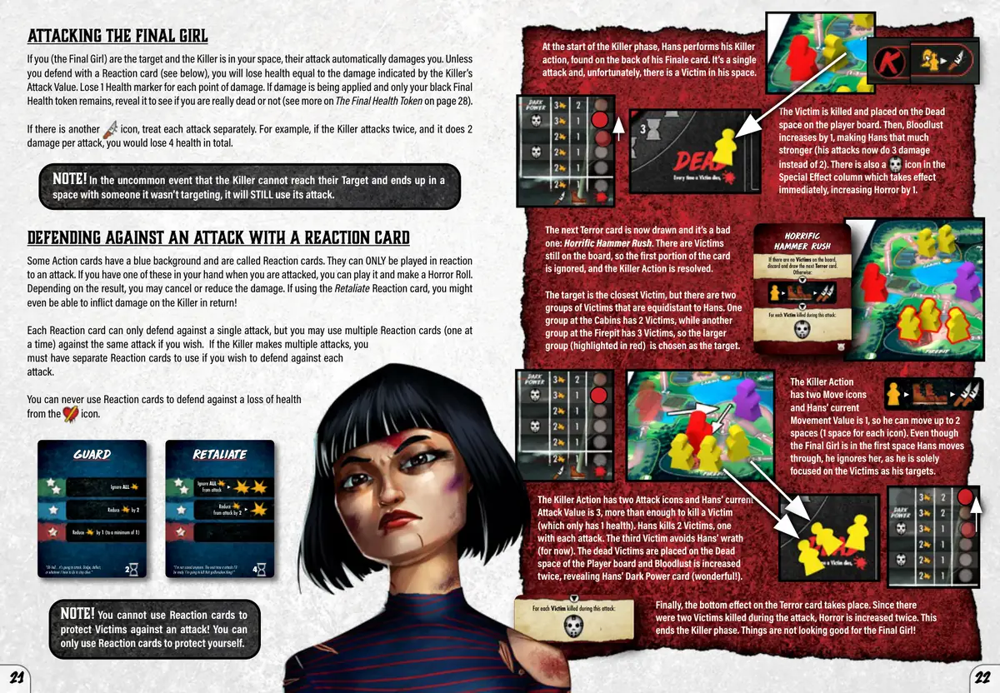
攻击最终女孩
如果你（最终女孩）是目标，且杀手在你的格中，他们的攻击会自动对你造成伤害。除非你使用反应牌（见下文）进行防御，否则你将失去等于杀手攻击值所指示的生命值。每点损失移除1个生命指示物。当伤害被应用且只有你的黑色最终生命指示物剩余时，揭示它以查看你是否真的死亡（更多关于最终生命指示物的信息见第28页）。
如果有另一个
图标，则将每次攻击分开处理。例如，如果杀手攻击两次，每次造成2点伤害，你总共将失去4点生命值。
使用反应牌防御攻击
一些行动牌有蓝色背景，被称为反应牌。它们只能在反应攻击时使用。当你被攻击时，如果你手中有这样的牌，你可以打出它并进行一次恐怖检定。根据结果，你可以取消或减少伤害。如果使用反击反应牌，你甚至可能能够对杀手造成伤害！
每张反应牌只能防御单次攻击，但如果你愿意，可以对同一次攻击使用多张反应牌（一次一张）。如果杀手进行多次攻击，你必须拥有单独的反应牌才能防御每次攻击。
你永远不能使用反应牌来防御因
图标造成的生命值损失。
注意！在杀手无法到达其目标并最终出现在非目标人物所在格的罕见情况下，它仍会使用其攻击。
"该死...它要攻击了。闪避、格挡，或者任何我能做的事情来活下来。"
守卫
守卫
忽略所有
减少2点
减少1点（最低为1点）
注意！你不能使用反应牌来保护受害者免受攻击！你只能使用反应牌来保护自己。
在杀手阶段开始时，汉斯执行他的杀手行动，该行动在他的终局牌背面。这是一次单一攻击，不幸的是，他的格中有一个受害者。
现在抽取下一张恐怖牌，这是一张坏牌：恐怖锤冲锋。版图上仍有受害者，因此牌的第一部分被忽略，杀手行动被结算。
目标是最近的受害者，但有两群受害者与汉斯距离相等。一群在小木屋有2个受害者，另一群在篝火坑有3个受害者，因此选择较大的群体（以红色高亮）作为目标。
杀手行动有两个
移动图标，汉斯当前的
移动值为1，因此他可以移动最多2个格（每个图标1个格）。尽管最终女孩在汉斯移动的第一个格中
穿过，他忽略了她，因为他完全专注于受害者作为他的目标。
杀手行动有两个攻击图标，而汉斯的当前攻击值是3，足以杀死一个受害者（只有1点生命值）。汉斯杀死了2个受害者，每个攻击杀死一个。第三个受害者躲过了汉斯的愤怒（暂时）。死亡的受害者被放置在玩家板的死亡空间上，嗜血增加了两次，揭示了汉斯的黑暗力量牌（太棒了！）。
受害者被杀死并放置在玩家板的死亡空间上。然后，嗜血增加1点，使汉斯变得更强大（他的攻击现在造成3点伤害而不是2点）。特殊效果栏中还有一个
图标，立即生效，增加1点恐怖值。
恐怖
恐怖
锤子冲锋
锤子冲锋
对于在此攻击期间杀死的每个受害者：
如果版图上没有受害者，则弃掉并抽取下一张恐怖牌。
否则：
对于在此攻击期间杀死的每个受害者：
最后，恐怖牌的底部效果生效。由于攻击期间杀死了2个受害者，恐怖值增加了两次。这结束了杀手阶段。对最终女孩来说，情况不妙！
"我不再害怕了。下次它攻击时我会做好准备。我要杀死那个该死的东西！"
反击
反击
忽略来自攻击的所有
将来自攻击的伤害减少2
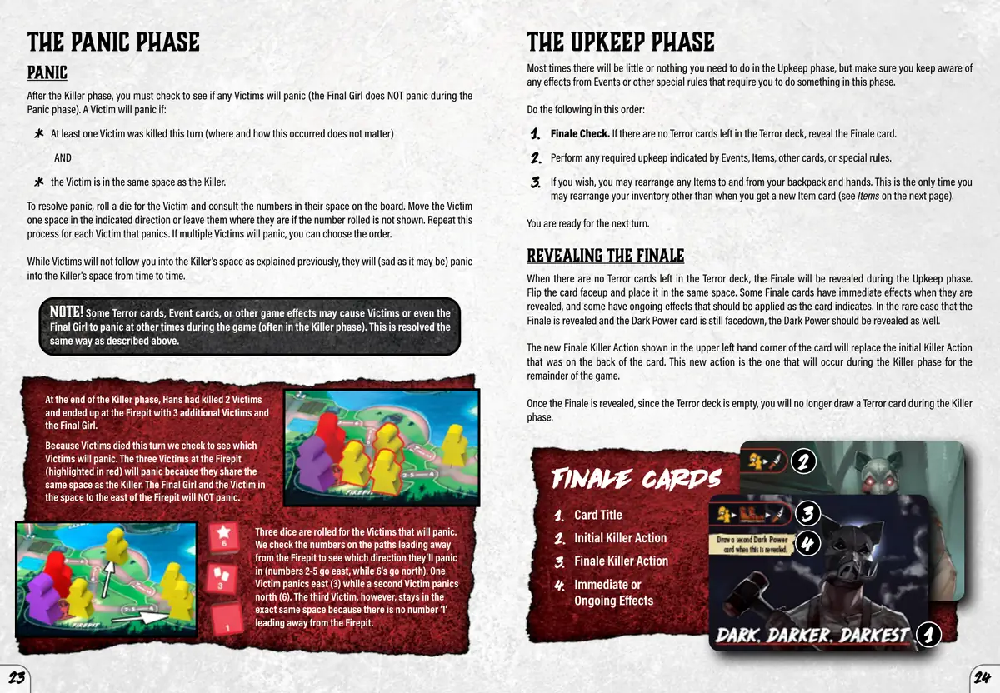
恐慌阶段
恐慌
在杀手阶段之后，你必须检查是否有受害者会恐慌（在恐慌阶段期间，最终女孩不会恐慌）。如果满足以下条件，受害者会恐慌：
- 本回合至少有一名受害者被杀死（发生的位置和方式无关）
并且
- 受害者与杀手在同一空间。
为解决恐慌，为受害者掷骰子，并参考版图上其所在空间的数字。将受害者向指示方向移动一格，或者如果掷出的数字未显示，则留在原地。对每个恐慌的受害者重复此过程。如果有多名受害者会恐慌，你可以选择顺序。
虽然如前所述受害者不会跟随你进入杀手的空间，但他们（尽管可能令人难过）会时不时地恐慌地进入杀手的空间。
维护阶段
大多数情况下，在维护阶段你几乎不需要做什么，但请务必注意任何需要在此时阶段执行的事件或其他特殊规则效果。
按以下顺序执行：
- 终局检查。如果恐怖牌库中没有恐怖牌了，揭示终局牌。
- 执行事件、物品、其他牌或特殊规则指示的任何必要维护。
- 如果你愿意，你可以重新整理你的背包和手中的物品。这是除了获得新物品牌时（见下一页的物品）之外，你可以重新整理物品的唯一时间。
你已准备好进入下一回合。
揭示终局
当恐怖牌库中没有恐怖牌时，终局将在维护阶段被揭示。
将牌面朝上翻转，并将其放置在同一空间。一些终局牌在揭示时有立即效果，一些则有持续效果，应根据牌面说明应用。在极少数情况下，如果终局被揭示而黑暗力量牌仍然面朝下，也应揭示黑暗力量牌。
卡片左上角显示的新终局杀手行动将替换卡片背面的初始杀手行动。这个新行动将在游戏剩余的杀手阶段期间执行。
一旦终局被揭示，由于恐怖牌库已空，你将不再在杀手阶段摸恐怖牌。
在杀手阶段结束时，汉斯杀死了2名受害者，并最终与3名额外受害者和最终女孩一起在篝火坑空间。
因为本回合有受害者死亡，我们检查哪些受害者会恐慌。在篝火坑的三名受害者（以红色高亮）会恐慌，因为他们与杀手在同一空间。最终女孩和篝火坑东边的空间中的受害者不会恐慌。
为将恐慌的受害者掷三个骰子。
我们检查从篝火堆向外延伸路径上的数字，以确定他们将恐慌的方向（数字2-5向东，而6向北）。一名受害者向东恐慌（3），第二名受害者向北恐慌（6）。然而，第三名受害者留在完全相同的位置，因为从篝火堆向外延伸的路径上没有数字'1'。
注意！一些恐怖卡牌、事件卡牌或其他游戏效果可能导致受害者在游戏的其他时间（通常在杀手阶段）甚至最终女孩恐慌。这以上述相同方式解决。
终局卡牌
1. 卡牌标题
2. 初始杀手行动
3. 终局杀手行动
4. 即时或
持续效果
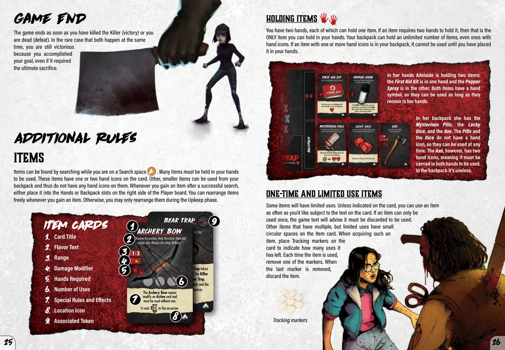
游戏结束
当你击杀了杀手（胜利）或你死亡（失败）时，游戏立即结束。在极少数情况下，如果这两件事同时发生，你仍然是胜利的，因为你完成了你的目标，即使这需要最终的牺牲。
额外规则
物品
当你位于搜索格时，可以通过搜索找到物品。许多物品必须拿在手中才能使用。这些物品在卡牌上有一个或两个手部图标。其他较小的物品可以从你的背包中使用，因此它们没有任何手部图标。每当你在成功搜索后获得一个物品时，将其放入玩家版图右侧的手牌或背包槽位中。每当获得物品时，你可以自由重新排列物品。否则，你只能在维护阶段重新排列它们。
持有物品
你有两只手，每只手可以持有一个物品。如果一个物品需要双手才能持有，那么这是你唯一可以在手中持有的物品。你的背包可以容纳无限数量的物品，即使是有手部图标的物品。如果一个或多个手部图标的物品在你的背包中，在你将其放入手中之前，它不能被使用。
一次性及有限使用物品
一些物品将有限的使用次数。除非卡牌上有说明，你可以根据卡牌文本的指示随意使用物品。如果一个物品只能使用一次，游戏文本会提示必须将其弃置才能使用。其他有多次但有限使用次数的物品在物品卡上有小的圆形空格。获得此类物品时，放置追踪标记在卡上以指示它还有多少次使用机会。每次使用该物品时，移除一个标记。当最后一个标记被移除时，弃置该物品。
物品卡
1. 卡牌标题
2. 背景文本
3. 射程
4. 伤害修正
5. 需要的手数
6. 使用次数
7. 特殊规则和效果
8. 位置图标
9. 关联指示物
捕熊夹
捕熊夹
"任何踏上这个的人都会有一个非常、非常、非常糟糕的一天。"
花费2点行动点将捕熊夹指示物放置在你的空间中（不是湖泊）。如果杀手进入有捕熊夹的空间，弃置该指示物并立即结束杀手阶段。杀手受到2点伤害。
弓箭
弓箭
"摆好姿势。搭上箭。拉满弓。瞄准。释放弓弦。正中靶心。"
弓箭不能修正行动卡，必须在不使用行动卡的情况下使用。发射一支箭需要花费2点行动点。
神秘药丸
神秘药丸
"不知道这些该死的东西是什么，但我别无选择。干了它，然后祈祷。"
在行动阶段弃置此卡并选择以下一项：
或
幸运骰子
幸运骰子
"我爸爸有一对这样的东西，说它们能给他带来好运。也许它们也能给我带来同样的好运。"
弃掉以重新掷出你任意或全部的骰子。
斧头
斧头
"别动，让我把这玩意儿埋进你脸上。"
每次你使用行动卡恢复生命值时，额外恢复一个急救包
急救包
"第一步：止血。第二步：活下去。"
胡椒喷雾
胡椒喷雾
"朝他们眼睛喷几下，他们就会三思而后行，不敢再惹这个姑娘。"
如果杀手在你的区域，你可以弃掉这张牌立即结束杀手阶段。忽略他们剩余的移动、攻击和任何其他效果。
阿德莱德手中拿着两件物品：急救包在一只手中，胡椒喷雾在另一只手中。这两件物品都有手部符号，因此只要它们留在她手中就可以使用。
在她的背包里有神秘药丸、幸运骰子和斧头。药丸和骰子没有手部图标，所以它们可以在任何时候使用。然而，斧头有两个手部图标，意味着它必须双手携带才能使用。在背包里它是无用的。
追踪标记
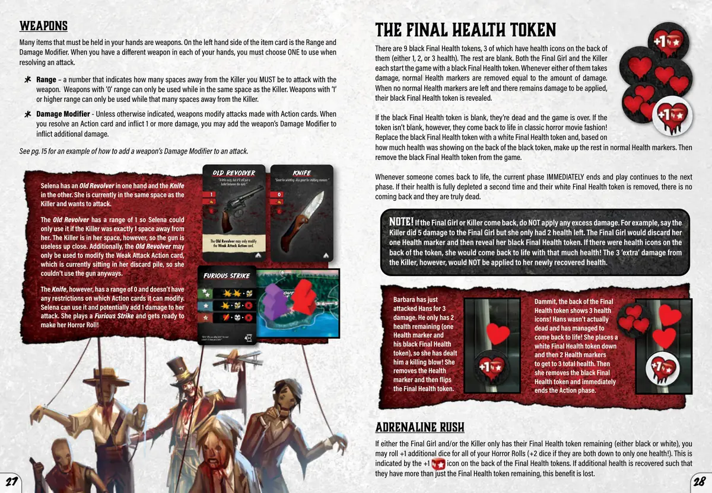
武器
许多必须手持的物品都是武器。在物品卡牌的左侧是射程和伤害修正值。当你的双手各持有一把不同的武器时，在解决攻击时你必须选择其中一把使用。
- 射程 - 一个数字，表示你必须与杀手相隔多少格才能使用该武器进行攻击。射程为"0"的武器只能在与杀手在同一格时使用。射程为"1"或更高的武器只能在距离杀手相应格数时使用。
- 伤害修正值 - 除非另有说明，武器会修正通过行动卡牌造成的攻击。当你解决行动卡牌并造成1点或更多伤害时，你可以加上武器的伤害修正值来造成额外伤害。
参见第15页了解如何将武器的伤害修正值加入攻击的示例。
最终生命指示物
有9个黑色最终生命指示物，其中3个背面有生命图标（1点、2点或3点生命）。其余的是空白的。最终女孩和杀手在游戏开始时各获得一个黑色最终生命指示物。当其中任一角色受到伤害时，移除等于伤害数量的普通生命标记。
当没有普通生命标记剩余且仍有伤害需要应用时，他们的黑色最终生命指示物会被翻开。
如果黑色最终生命指示物是空白的，他们就死亡了，游戏结束。然而，如果指示物不是空白的，他们就会以经典恐怖电影的方式复活！将黑色最终生命指示物替换为白色最终生命指示物，并根据黑色指示物背面显示的生命值，用普通生命标记补足剩余生命。然后将黑色最终生命指示物移出游戏。
每当有人复活，当前阶段立即结束，游戏继续进行到下一阶段。如果他们的生命值第二次被完全耗尽且白色最终生命指示物被移除，他们将无法再次复活，真正死亡。
肾上腺素激增
如果最终女孩和/或杀手只剩下他们的最终生命指示物（无论是黑色还是白色），你可以在所有恐怖检定中额外投掷+1个骰子（如果两人都只剩一点生命，则+2个骰子！）。这由最终生命指示物背面的+1图标表示。如果恢复了额外的生命值，使他们除了最终生命指示物外还有更多生命，这个福利就会消失。
塞琳娜一手持有旧式左轮手枪，另一手持有匕首。她目前与杀手在同一格，并想要攻击。
旧式左轮手枪的射程为1，所以塞琳娜只有在杀手距离她正好1格时才能使用它。然而，杀手就在她所在的格子里，所以这把枪
近距离毫无用处。此外，老式左轮手枪只能用于修改弱攻击行动卡，而这张卡目前正躺在她的弃牌堆中，所以她无论如何都无法使用这把枪。
然而，匕首的射程为0，并且对它可以修改的行动卡没有任何限制。塞莱娜可以使用它，并可能为她的攻击增加1点伤害。她打出了一次猛烈打击，准备进行她的恐怖检定！
老式左轮手枪只能修改
弱攻击行动卡。
老式左轮手枪
老式左轮手枪
"有点生锈，但仍然能把一颗子弹射进眼睛里。"
匕首
匕首
"适合削木头。也适合刺杀人疯子。"
"婊子？你叫谁婊子？你想见识一下婊子吗？我会让你见识的！"
猛烈打击
猛烈打击
芭芭刚对汉斯造成了3点伤害。他只剩下2点生命值（一个生命指示物和他的黑色最终生命指示物），所以她对他造成了致命一击！她移除了生命指示物，然后翻转了最终生命指示物。
该死，最终生命指示物的背面显示了3个生命图标！汉斯实际上并没有死，并且成功复活了！她放置了一个白色最终生命指示物，然后放了2个生命指示物，总共达到3点生命值。接着她移除了黑色最终生命指示物，并立即结束行动阶段。
注意！如果最终女孩或杀手复活，不要应用任何多余伤害。例如，假设杀手对最终女孩造成了5点伤害，但她只剩下2点生命值。最终女孩会丢弃她的一个生命指示物，然后揭示她的黑色最终生命指示物。如果指示物背面有生命图标，她会以相应的生命值复活！然而，杀手造成的3点"额外"伤害不会应用于她新恢复的生命值。
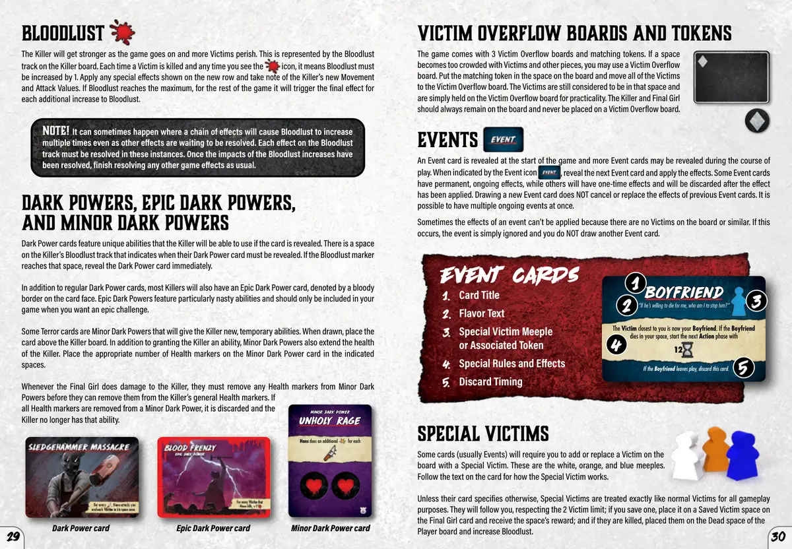
嗜血
随着游戏的进行和更多受害者的死亡，杀手会变得越来越强大。这通过杀手版图上的嗜血轨道来表示。每当一名受害者被杀，以及任何时候你看到这个图标时，意味着嗜血值必须增加1。应用新行上显示的任何特殊效果，并记下杀手的新移动值和攻击值。如果嗜血值达到最大值，在游戏的剩余时间里，每次额外的增加都会触发最终效果。
黑暗力量、史诗级黑暗力量和次要黑暗力量
黑暗力量卡牌具有独特能力，如果卡牌被揭示，杀手将能够使用这些能力。在杀手的嗜血轨道上有一个位置，指示何时必须揭示其黑暗力量卡牌。如果嗜血标记到达该位置，立即揭示黑暗力量卡牌。
除了常规的黑暗力量卡牌外，大多数杀手还将拥有一张史诗级黑暗力量卡牌，卡牌正面有血腥边框表示。史诗级黑暗力量具有特别恶毒的能力，只有在您想要史诗级挑战时才应在游戏中包含。
一些恐怖卡牌是次要黑暗力量，会给杀手提供新的临时能力。当抽到时，将卡牌放在杀手版图上方。除了赋予杀手能力外，次要黑暗力量还会延长杀手的生命值。在指示的位置上，将适当数量的生命值指示物放在次要黑暗力量卡牌上。
每当最终女孩对杀手造成伤害时，她必须先从次要黑暗力量上移除任何生命值指示物，然后才能从杀手的通用生命值指示物上移除它们。如果从次要黑暗力量上移除了所有生命值指示物，则该卡牌被弃置，杀手不再拥有该能力。
受害者溢出版图和指示物
游戏包含3张受害者溢出版图和对应的指示物。如果一个空间变得过于拥挤，充满了受害者和其他棋子，你可以使用受害者溢出版图。将对应的指示物放在版图上的该空间中，并将所有受害者移动到受害者溢出版图上。受害者仍被认为在该空间中，只是出于实用性考虑被放在受害者溢出版图上。杀手和最终女孩应始终留在版图上，永远不要放在受害者溢出版图上。
事件
游戏开始时会揭示一张事件卡，在游戏过程中可能会揭示更多事件卡。当事件图标指示时，揭示下一张事件卡并应用其效果。一些事件卡具有永久性的持续效果，而其他事件卡则具有一次性效果，在应用效果后将被弃置。抽新的事件卡不会取消或替换之前事件卡的效果。
可以同时存在多个进行中的事件。
有时由于版图上没有受害者或类似情况，事件的效果无法应用。如果发生这种情况，该事件被简单忽略，你也不会再摸一张事件卡。
特殊受害者
某些卡牌（通常是事件卡）会要求你在版图上添加或替换一个特殊受害者。这些是白色、橙色和蓝色的米宝。
按照卡牌上的文本说明特殊受害者如何运作。
除非卡牌另有说明，否则特殊受害者在所有游戏目的下都被视为与普通受害者完全相同。他们会跟随你，遵守2名受害者的限制；如果你救了其中一名，将其放在最终女孩卡牌的"已获救受害者"区域上并获得该区域的奖励；如果他们被杀死，将其放在玩家板的"死亡"区域上并增加嗜血值。
注意！有时会发生一系列效果导致嗜血值多次增加，而其他效果正在等待解决。在这些情况下，嗜血值轨道上的每个效果都必须被解决。一旦嗜血值增加的影响已被解决，像往常一样完成解决任何其他游戏效果。
黑暗力量卡牌
次要黑暗力量卡牌
不圣之怒
不圣之怒
次要黑暗力量
次要黑暗力量
汉斯为每名额外进行
史诗黑暗力量卡牌
男友
男友
"如果他愿意为我而死，我为什么要阻止他？"
离你最近的受害者现在成为你的男友。如果男友在你的空间中死亡，在下一个行动阶段开始时
如果男友离开游戏，弃掉此卡。
事件卡
1. 卡牌标题
2. 背景文本
3. 特殊受害者米宝
或相关指示物
4. 特殊规则和效果
5. 弃牌时机
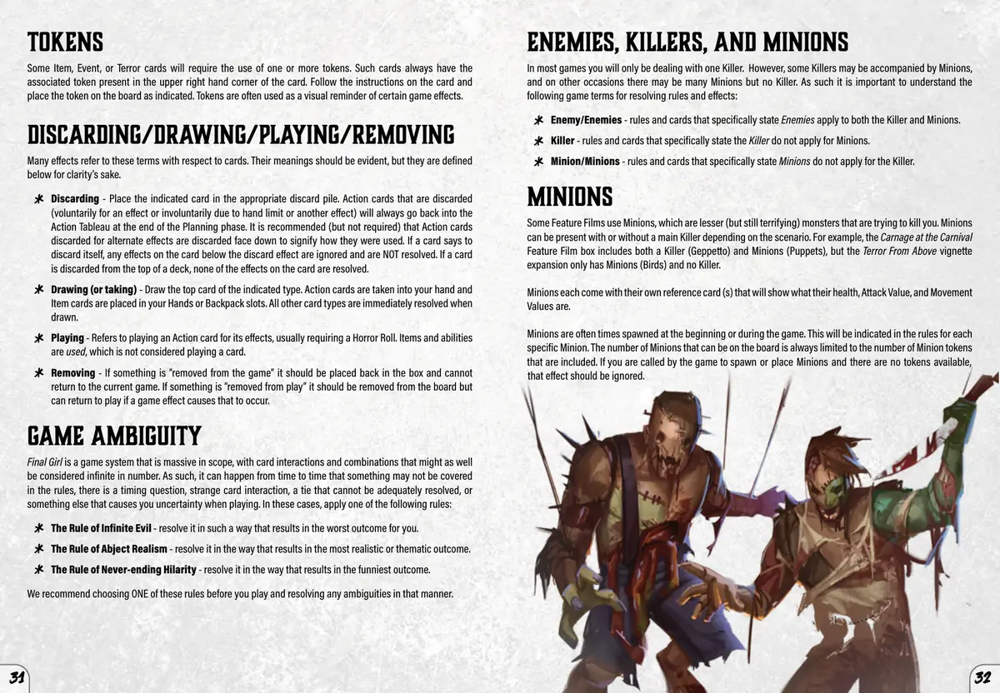
指示物
某些物品、事件或恐怖卡牌需要使用一个或多个指示物。此类卡牌的右上角总是会有相应的指示物。按照卡牌上的指示，将指示物放置在版图上所示的位置。指示物通常用作某些游戏效果的视觉提醒。
弃牌/摸牌/打出/移除
许多效果会使用这些术语来描述卡牌操作。它们的含义应该很明显，但为了清晰起见，下面给出定义：
- 弃牌 - 将指定的卡牌放入相应的弃牌堆。被弃置的行动卡牌（自愿为效果弃置或因手牌上限或其他效果被迫弃置）总是在计划阶段结束时回到行动牌区。建议（但不强制）为替代效果而弃置的行动卡牌面朝下弃置，以表明它们的使用方式。如果一张卡牌指示弃置自身，则弃置效果下方的所有效果将被忽略且不会结算。如果一张卡牌从牌库顶部被弃置，则该卡牌上的所有效果都不会结算。
- 摸牌（或抽取） - 抽取指定类型的牌库顶部的卡牌。行动卡牌被收入手牌，物品卡牌被放置在手牌或背包槽位。所有其他类型的卡牌在摸到后立即结算。
- 打出 - 指为效果打出行动卡牌，通常需要做一个恐怖检定。物品和能力被使用，这不被视为打出卡牌。
- 移除 - 如果某物被"移出游戏"，应将其放回盒中，不能返回当前游戏。如果某物被"移出游戏区域"，应将其从版图上移除，但如果游戏效果导致其可以返回，则可以回到游戏中。
游戏歧义
《最终女孩》是一个范围广大的游戏系统，卡牌互动和组合的数量可以说是无限的。因此，有时可能会出现规则未涵盖的情况、时间点问题、奇怪的卡牌互动、无法充分解决的平局，或其他导致你在游戏时产生不确定性的情况。在这些情况下，应用以下规则之一：
- 无限邪恶规则 - 以对你造成最坏结果的方式解决。
- 绝对现实主义规则 - 以最现实或最符合主题的方式解决。
- 永无止境的欢乐规则 - 以最有趣的方式解决。
我们建议你在游戏前选择其中一条规则，并以该方式解决任何歧义。
敌人、杀手和爪牙
在大多数游戏中，你只会面对一个杀手。然而，有些杀手可能会伴随有爪牙，而在其他情况下可能有很多爪牙但没有杀手。因此，理解以下游戏术语对于解决规则和效果非常重要：
- 敌人 - 明确提及敌人的规则和卡牌同时适用于杀手和爪牙。
- 杀手 - 明确提及杀手的规则和卡牌不适用于爪牙。
- 爪牙 - 明确提及爪牙的规则和卡牌不适用于杀手。
爪牙
一些特色电影会使用爪牙，这些是次要的（但仍很恐怖）的怪物，它们试图杀死你。根据场景的不同，爪牙可以与主杀手一起出现，也可以单独出现。例如，"嘉年华屠杀"特色电影盒既包含一个杀手（Geppetto）也包含爪牙（木偶），但"空中恐怖"小品扩展只有爪牙（鸟类）而没有杀手。
每个爪牙都有自己的参考卡，上面会显示它们的生命值、攻击值和移动值。
爪牙通常在游戏开始时或游戏过程中生成。这会在每个特定爪牙的规则中说明。版图上可存在的爪牙数量始终受包含的爪牙指示物数量的限制。如果游戏要求你生成或放置爪牙但没有可用的指示物，则应忽略该效果。
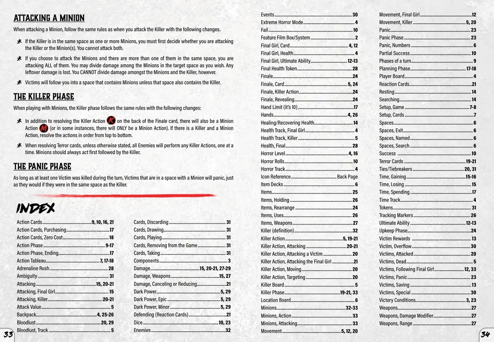
攻击米宝
当攻击米宝时，遵循与攻击杀手相同的规则，但有以下变更：
- 如果杀手与一个或多个米宝在同一格，你必须先决定是攻击杀手还是米宝。你不能同时攻击两者。
- 如果你选择攻击米宝，且同一格中有多个米宝，你将攻击所有米宝。你可以随意将伤害分配给目标格中的米宝。任何剩余的伤害将丢失。但是，你不能将伤害分配给米宝和杀手。
- 受害者会跟随你进入包含米宝的格，除非该格也包含杀手。
杀手阶段
使用米宝游玩时，杀手阶段遵循相同的规则，但有以下变更：
- 除了解决终局卡背面的杀手行动外，还会有一个米宝行动（或者在某些情况下，只有米宝行动）。如果有杀手行动和米宝行动，请从上到下依次解决这些行动。
- 在解决恐怖卡牌时，除非另有说明，所有敌人将依次执行任何杀手行动。米宝应始终先于杀手行动。
恐慌阶段
只要在回合中有至少一名受害者被杀，与米宝在同一格的受害者将会恐慌，就像他们与杀手在同一格时一样。
事件.......................................................................................30
极限恐怖模式.........................................................4
失败...............................................................................................10
电影盒/系统.................................................2
最终女孩，卡牌.................................................................4, 12
最终女孩，生命值....................................................................4
最终女孩，终极能力.........................................12-13
最终生命值指示物.............................................................28
终局.........................................................................................24
终局，卡牌......................................................................5, 24
终局，杀手行动............................................................24
终局，揭示.................................................................24
手牌上限（10张）...............................................................17
手牌..................................................................................4, 26
治疗/恢复生命值...........................................14
生命值轨迹，最终女孩.......................................................4
生命值轨迹，杀手...............................................................5
生命值，最终女孩..........................................................................28
恐惧等级......................................................................4, 16
恐惧检定............................................................................10
恐惧轨迹.............................................................................4
图标参考...................................................背面页
物品牌库................................................................................6
物品.........................................................................................25
物品，持有......................................................................26
物品，重新排列.................................................................24
物品，使用次数............................................................................26
物品，武器...................................................................27
杀手（定义）.................................................................32
杀手行动.................................................................5, 19-21
杀手行动，攻击..............................................20-21
杀手行动，攻击受害者.................................20
杀手行动，攻击最终女孩.........................21
杀手行动，移动........................................................20
杀手行动，选择目标....................................................20
杀手版图...............................................................................5
杀手阶段..............................................................19-21, 33
地点版图.......................................................................6
爪牙.............................................................................32-33
爪牙，行动....................................................................33
爪牙，攻击.............................................................33
移动..................................................................5, 12, 20
移动，最终女孩..........................................................12
移动，杀手...........................................................5, 20
恐慌.........................................................................................23
恐慌阶段..........................................................................23
恐慌，数字......................................................................6
部分成功....................................................................10
回合的阶段.....................................................................9
规划阶段..............................................................17-18
玩家版图............................................................................4
反应卡牌......................................................................21
休息.....................................................................................14
搜索................................................................................14
设置，游戏.........................................................................7-8
设置，卡牌..............................................................................7
区域........................................................................................6
区域，出口..............................................................................6
区域，命名......................................................................6
区域，搜索.......................................................................6
成功 ...................................................................................10
恐怖卡牌......................................................................19-21
平局/平局规则..........................................................20, 31
时间，获得..................................................................15-16
时间，失去...........................................................................15
时间，花费.....................................................................17
时间轨道.................................................................................4
指示物.......................................................................................31
追踪标记................................................................26
终极能力...............................................................12-13
维护阶段.......................................................................24
受害者奖励 ...................................................................13
受害者，溢出.................................................................30
受害者，被攻击...............................................................20
受害者，死亡..........................................................................5
受害者，跟随最终女孩.................................12, 33
受害者，恐慌......................................................................23
受害者，拯救.....................................................................13
受害者，特殊...................................................................30
胜利条件........................................................3, 23
武器..................................................................................27
武器，伤害修正..........................................27
武器，射程.................................................................27
行动卡牌.......................................................9, 10, 16, 21
行动卡牌，购买................................................17
行动卡牌，零费用...................................................18
行动阶段......................................................................9-17
行动阶段，结束.........................................................17
行动牌组............................................................7, 17-18
肾上腺素激增.................................................................28
歧义................................................................................31
攻击...................................................................15, 20-21
攻击，最终女孩............................................................15
攻击，杀手.............................................................20-21
攻击值.............................................................................5
背包....................................................................4, 25-26
嗜血.........................................................................20, 29
嗜血，追踪......................................................................5
卡牌，弃置................................................................31
卡牌，抽取.....................................................................31
卡牌，打出.......................................................................31
卡牌，从游戏中移除...............................31
卡牌，获取.........................................................................31
组件............................................................................3
伤害.......................................................15, 20-21, 27-29
伤害，武器......................................................15, 27
伤害，取消或减少.........................................21
黑暗力量.......................................................................5, 29
黑暗力量，史诗............................................................5, 29
黑暗力量，次要........................................................5, 29
防御（反应卡牌）..........................................21
骰子.....................................................................................10, 23
敌人...................................................................................32
索引
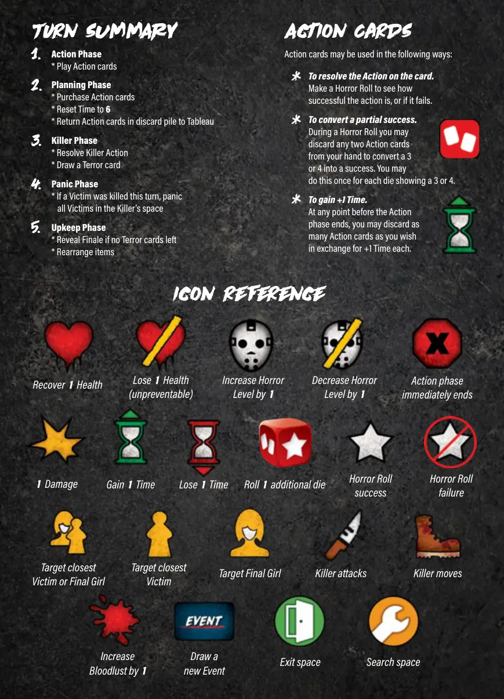
行动阶段
- 使用行动卡牌
计划阶段
- 购买行动卡牌
- 将时间重置为6
- 将弃牌堆中的行动卡牌返回到展示区
凶手阶段
- 解决凶手行动
- 抽取一张恐怖卡牌
恐慌阶段
- 如果本回合有受害者被杀，则凶手所在空间的所有受害者陷入恐慌
维护阶段
- 如果没有恐怖卡牌剩余，揭示终局卡
- 重新排列物品
- 恢复1点生命值
- 失去1点生命值
- （不可阻止）
- 提升恐怖等级1级
- 降低恐怖等级1级
- 1点伤害
- 获得1点时间
- 失去1点时间
- 行动阶段立即结束
- 额外投掷1个骰子
- 凶手攻击
- 凶手移动
- 提升1点嗜血
- 抽取一张新事件卡
- 目标最近的受害者或最终女孩
- 恐怖检定成功
- 恐怖检定失败
- 目标最近的受害者
- 目标最终女孩
- 离开空间
- 搜索空间
回合总结
图标参考
行动卡牌
行动卡牌可以通过以下方式使用：
- 解决卡牌上的行动。进行恐怖检定以了解行动的成功程度，或是否失败。
- 转换部分成功。在恐怖检定过程中，你可以弃掉手牌中的任意两张行动卡，将3或4转换为成功。对于每个显示为3或4的骰子，你可以执行此操作一次。
- 获得+1时间。在行动阶段结束前的任何时间点，你可以弃掉任意数量的行动卡，每张卡换取+1时间。